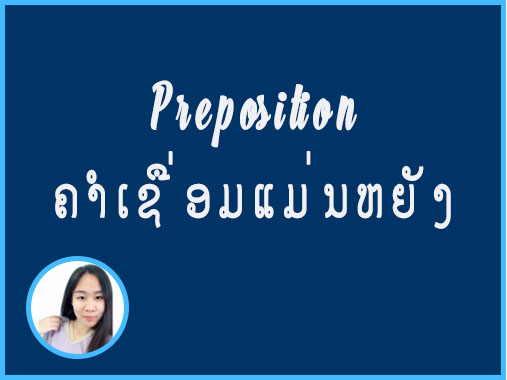

Preposition
ຄືຄຳທີ່ເຊື່ອມຄຳນາມ ຫຼື ຄຳນາມແທນນາມເຂົ້າກັບຄຳອື່ນໆ ເພື່ອສະແດງຄວາມສຳພັນກຽ່ວເນື່ອງກັນເຊັ່ນ on, in, under, at, between
* ປະເພດຂອງຄຳເຊື່ອມມີຄື :
1 . ຄຳດຊື່ອມບອກສະຖານທີ່ (prepositions of place) ເຊັ່ນ at, on, in, etc.
ຕົວຢ່າງ
Jane is at home.
2 .ຄໍາເຊື່ອມບອກຕໍາແໜ່ງ (prepositions of position) ເຊັ່ນ above, beneath, behind, in front of, etc.
ຕົວຢ່າງ
There is a big tree in front of Jane’s house.
Henry is hiding behind the bush.
Peter’s book is beneath Bill’s book.
3. ຄຳເຊື່ອມບອກການເຄື່ອນໄຫວ (prepositions of motion) ເຊັ່ນ through, into, towards, out of, away from, etc.
ຕົວຢ່າງ
The train is going through the tunnel.
Peter is walking towards the monument.
Ann is driving into the parking lot.
4. ຄໍາເຂື່ອມບອກທິດທາງ (prepositions of direction) ເຊັ່ນ up, down, across, along, etc.
ຕົວຢ່າງ
Susan is driving up the hill.
Peter is walking across the street.
Jane is walking along Chaeng Watthana Road.
5. ຄຳບຸບພະບົດບອກເວລາ (prepositions of time) ເຊັ່ນ on, in, at, by, after, before, etc.
ຕົວຢ່າງ
I play football on Monday.
I will finish the project in a year.
6.ຄໍາເຊື່ອມບອກລັກສະນະ ອາການ (prepositions of manner) ເຊັ່ນ in, with, without, etc.
ຕົວຢ່າງ
Ann speaks in a very low voice.
Peter listened with great interest.
Nobody can live without hope.
7. ຄຳເຊື່ອມບອກຄວາມສຳພັນ (prepositions of relationship) ເຊັ່ນ about, of, with, in, from, etc.
ຕົວຢ່າງ
The children are talking about toys.
Bangkok is the capital of Thailand.